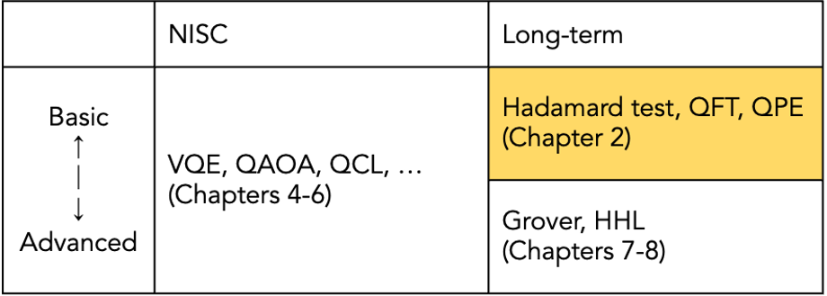

2-1. NISQ algorithms and long-term algorithms¶
The quantum algorithms that are currently being invented and discovered can be broadly classified into two groups in terms of feasibility. One is the NISQ algorithm and the other is the long-term algorithm. (Note that these words are not common and should be used with caution when looking at other literature. Also note that the distinction between the two is not absolute, but shifts depending on the size of the problem to be solved, technological advances, etc.) Typical examples of these are shown in Table.
(VQE = Variational Quantum Eigensolver (5-1), QAOA = Quantum Approximate Optimization Algorithm (5-3), QCL = Quantum Circuit Learning (5-2), QFT = Quantum Fourier Transform (2-3), QPE = Quantum Phase Estimation (2-4、7-1), HHL = Harrow-Hassidim-Lloyd algorithm (7-2))
NISQ Algorithm¶
What is NISQ?¶
NISQ Algorithm Overview¶
In the NISQ device, as mentioned above, the effect of noise is inevitable. The longer the computation (and the more complex the algorithm), the more noise accumulates, eventually making the output result a hoax. For example, the famous quantum algorithms, Shor’s algorithm and Grover’s algorithm, have complex circuits (many operations) and are difficult to execute with NISQ, which has low error tolerance, due to lack of power.
On the other hand, the NISQ algorithm was created to see if it is possible to find some practical useful examples even if NISQ is used. Although the above statement may give a negative impression, it has been suggested that NISQ may outperform classical computers in tasks such as simulating chemical reactions (see the Qmedia article Quantum Computers Today and Tomorrow.) NISQ is attracting attention as a leader in “quantum supremacy,” where the superiority of quantum computers over classical computers is demonstrated.
In general, quantum computation is more susceptible to errors as the number of qubits and quantum operations increase. Therefore, the NISQ algorithm must be able to perform with a small number of qubits and shallow quantum circuits (small number of quantum gates). Against this background, the “quantum-classical hybrid algorithm” approach has become the dominant approach in the study of NISQ algorithms. This means that instead of entrusting the quantum computer with all of the calculations to be performed, only the parts in which the quantum computer excels are entrusted to the quantum computer, and the rest is handled by the classical computer. The NISQ algorithm used in Quantum Native Dojo is basically based on this quantum-classical hybrid algorithm approach.
Long-Term Algorithm¶
On the other hand, the long-term algorithm is an algorithm that becomes possible only under the assumption that a large number of qubits are available and that error correction is possible. Of course, whether or not it can be performed by NISQ depends on the size and desired accuracy of the problem to be solved, so there is no deep meaning in distinction between NISQ algorithm and long-term algorithm. It may be better to think of all quantum algorithms as long-term algorithms, and some of them as algorithms that can be run on NISQ devices.
The algorithms we will study in this chapter are the introductory long-term algorithms (see the yellow area in the table above). In the latter part of the chapter, we will deal with more advanced long-term algorithms such as Grover’s algorithm as well as the NISQ algorithm, which has been actively studied in recent years.
To learn more :¶
Qmedia “Quantum Computers Today and Tomorrow” https://www.qmedia.jp/nisq-era-john-preskill/
Quantum Algorithm Zoo http://quantumalgorithmzoo.org/
Quantum Algorithm Zoo Japanese translation https://www.qmedia.jp/algebraic-number-theoretic-algorithms/
[ ]: